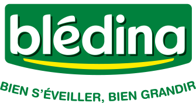

à propos de Bledina

C est la societe Danone Nutricia Africa & Overseas (DNAO), societe du Groupe Danone, situee à Villefranche sur Saône qui assure la commercialisation des produits de la societe Bledina en Algerie depuis 2010 mais aussi dans plus de 40 pays du continent africain.
Chez DNAO, nous nous devons d etre responsables vis-à-vis des enfants : leur donner toutes les chances de bien grandir et d acquerir de bonnes habitudes alimentaires en proposant des produits varies et adaptes à leurs besoins nutritionnels.
Mais nous sommes aussi responsables vis-à-vis des parents : les accompagner au mieux en proposant des produits adaptes à leurs enfants jusqu à 3 ans ; les aider dans l apprentissage et l eveil de leurs enfants; repondre aux questions qu ils se posent.
Parce que les enfants jusqu a 3 ans ne sont pas des mini adultes, ils ont besoin d une alimentation specifique et sur mesure que DNAO s engage à leur proposer.